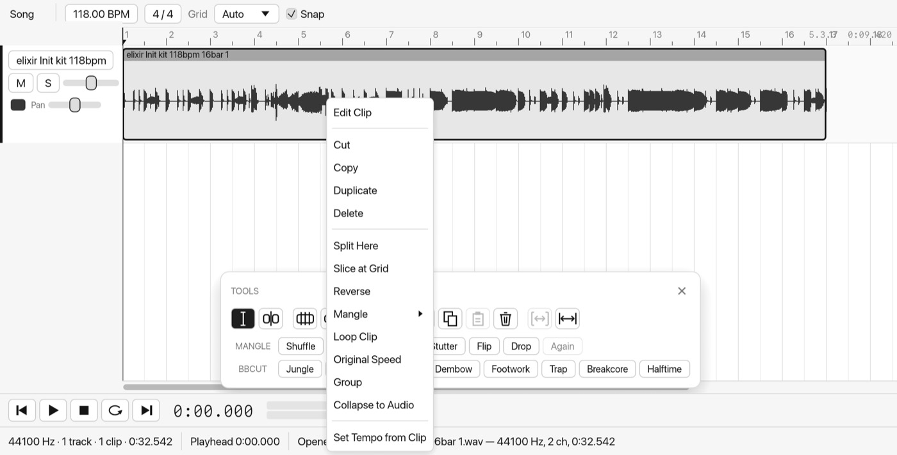
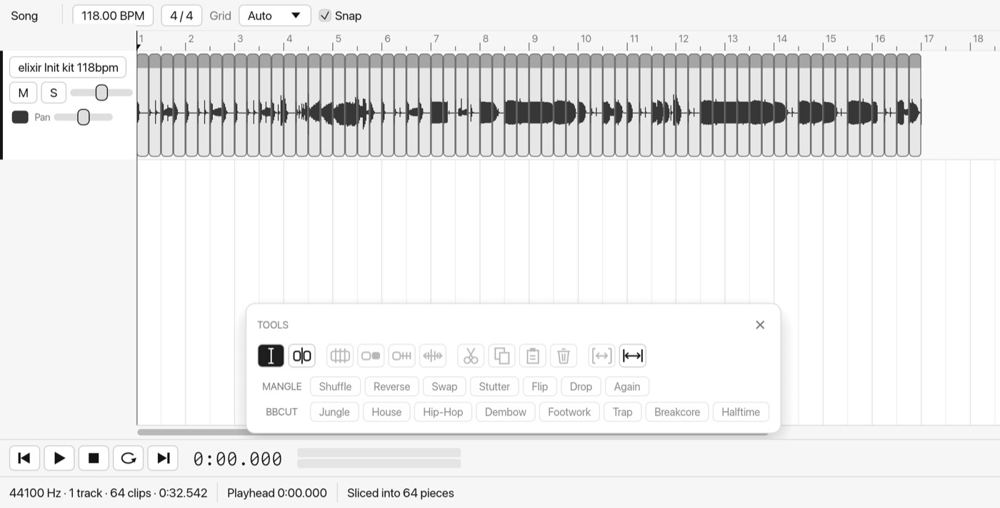
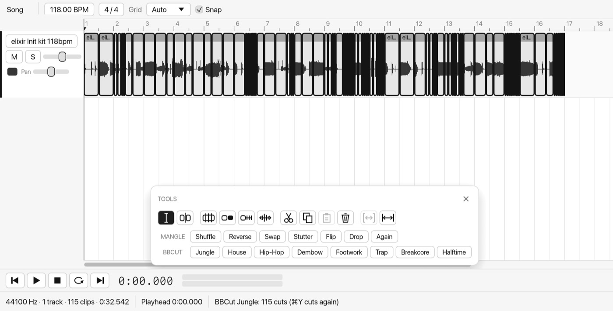
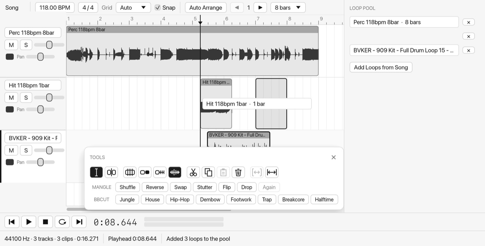
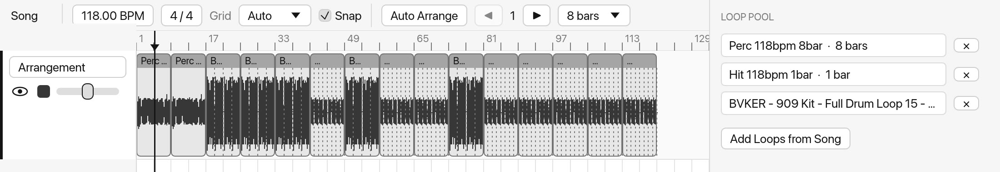
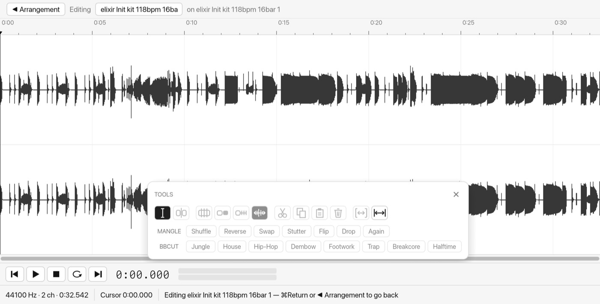
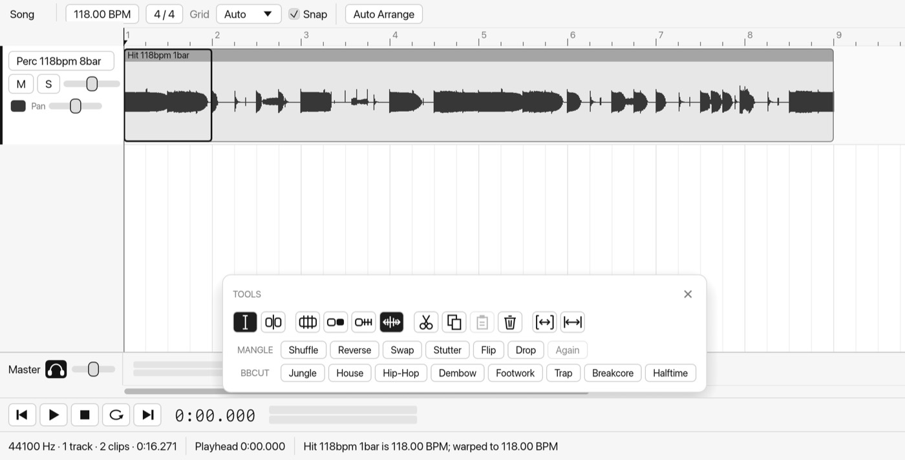

Clip
Ableton Live's audio loop workflow, with destructive audio editing built in, and group clips: clips that hold their own tracks, open with a double-click and loop in a Session slot like any other clip. It uses Live's names and shortcuts throughout. (It was called Sound Edit, then PhotoSound, until October 2026.)
01Getting started
- Open the app from Applications, or Spotlight "Clip".
- Drop loops on the window. Each goes on its own track. A tempo in the file name, like "118bpm 16bar" or "124 BPM", sets the song tempo and stretches the loop to fit it.
- Press Space to play the whole song from the playhead. Click empty space to move the playhead.
- Chop, stack and arrange with the tools below, then File ▸ Save Project ⌘S to keep everything in one file.
02The arrangement
A song is a stack of tracks, and audio sits on them as clips, laid out much like Ableton's Arrangement view. The top bar sets the tempo, beats per bar, the grid, and whether things snap to it.

- Select time as in Live: drag across empty space, or across a clip's waveform, and a light blue wash marks that stretch on the tracks you drag over. ⌫ deletes it, ⌘E splits the clips at its ends, and ⌘L loops it. Mangle, BBCut, Reverse, Swap and the other clip processes work only inside it too. ⌘D duplicates it right after itself; Edit ▸ Duplicate Time ⇧⌘D pushes the rest of the song later, Delete Time ⇧⌘⌫ takes it out and closes the gap, and Insert Time ⌘I opens up empty time. Shift-click clips to select whole clips.
- Move a clip by dragging its name strip, along its track or onto another. Drag below the last track to make a new one. ⌥-drag drags a copy.
- Trim by dragging either edge. The audio underneath is kept, so you can drag it back out.
- Phrase lines: a fine line runs across every 4 bars, counting from bar 1. Clip ▸ Preferences (the app menu) ⌘, changes the spacing, or 0 turns them off.
- Snapping: moves and trims snap to the grid, other clips' edges and the playhead. Hold ⌘ to place freely.
- Fades: drag the small handles at a clip's top corners to fade it in or out.
- Locators: Control ▸ Add Locator, or right-click the ruler, adds a named marker. [ ] jump between them; right-click one to rename it, delete it or loop to the next.
- Playing: play starts from where you last clicked and stopping leaves it there, as in Live. ⇧Space carries on from where you stopped, ⌘F turns Follow on or off, the Metronome button in the top bar clicks along (higher on beat 1, never exported), and ⌘U quantizes clip starts to the grid.
- More Live editing: ⇧⌥-drag a clip's waveform to slide its audio inside it. Edit ▸ Cut / Copy / Paste Time (⇧⌘X ⇧⌘C ⇧⌘V) work on every track. ⇧⌘J crops clips to a selection and ⌘J consolidates it. 0 switches clips off and on. Arrow keys nudge clips or move the insert marker; ⇧← ⇧→ grow the selection; ⌘↑ ⌘↓ double or halve the loop. Double-click the bar numbers to zoom; H fits the tracks to the height. Drag locators to move them. ⌘R renames the selected clip (in either view) or locator, as in Live. The Clip View has Pitch and ×2 / ÷2.
- Detail view: select one clip and it opens under the song, as in Live: its waveform with the bar ruler and start flag, and the Clip View down the left (Warp and the clip's BPM, Loop, Reverse, Start, Length, Gain). Click in the waveform to edit there; click the song to go back. The transport sits along the top.
- Each track has an activator (mute), Solo, a volume slider, a colour swatch and pan. ⌥⌘↑ ⌥⌘↓ step between tracks.
- Copy, cut, paste clips with ⌘C ⌘X ⌘V. Paste goes on the selected track at the playhead. ⌘D duplicates a clip right after itself, and ⌫ deletes it.
- Dropping files onto a track adds them at the drop point. Several files go on the tracks below, one each.
03Tracks
Tracks play together, mixed, as in Live. Each has Live's track activator (its number, lit while it plays; click to mute), Solo, a volume slider, a colour and pan. Solo wins over mute.
The Session view Tab
Tab flips between the song and the Session view: a grid of clip slots, a column per track and a row per scene, for audio loops only. Eight scenes to start; + Scene adds more.
- Fill slots by dropping loops from the Finder or the Loop Pool. Drag a clip to another slot to move it, ⌥-drag to copy. Right-click a song clip ▸ Copy to Session puts it in the first empty slot.
- Launch a clip with its triangle (a click elsewhere selects it). Launches wait for the next bar (change it with Launch quantize), each track plays one clip, the scene buttons launch a row, a column's square stops its track and Stop All Clips stops everything.
- Copy and paste between slots and the Arrangement view with ⌘C ⌘X ⌘V, both ways: into the selected slot (and the ones below), or at the insert marker on the selected track. Warp, loop and colour come along.
- Edit: click a clip to see it in the detail view under the grid, double-click to open the full clip editor. Shift-click slots and ⌘G groups them into one clip whose parts play in turn.
- Back to the Arrangement: a track playing from the session drowns out its Arrangement clips until you press Back to Arrangement. Turn on ● Arrangement Record and what you launch is written into the Arrangement view when you stop.
03bColours and dark mode
Clips are coloured as in Live: the name strip in the clip's colour, a lighter body and a dark waveform. Right-click a clip or a session slot for Live's 70-colour picker. Click a track's colour swatch, or right-click its header, to colour the track; its clips follow unless they have their own colour. Clip ▸ Preferences ⌘, ▸ Appearance picks Clip Light, any of the 18 themes that come with Live 12, or Match the Mac. It changes as you pick. Live Set exports keep the colours.
03cEffects and Spacer
Each track has a chain of built-in effects, like Live's devices. Click a track's name and they show along the bottom, each with an on/off switch, its settings and × to remove it; + Add Effect adds another (or right-click a track ▸ Add Effect). Effects run in order, live and in exports, and are saved with the project.
Return tracks, as in Live: every song starts with A (Reverb) and B (Delay). Each track's send knobs feed them after its volume and pan: at the top of each track's mixer in the Session view, or in the track header in the Arrangement view when the lane is tall enough. Returns show beside Main in the Session view and above Master in the Arrangement view; click one's name for its effects. Tracks ▸ Insert Return Track adds another; right-click one to delete it.
Reverb, Spring (a spring reverb tank: chirping, boingy echoes, after Parker and Välimäki) Delay (synced to the tempo, with ping-pong) and Tape can go on any track as well. Tape is a tape echo built on Chowdhury's physical model of an analog tape machine (DAFx 2019): each repeat is recorded through the tape's magnetic hysteresis and played back through the play head's losses, with wow and flutter, so the echoes get warmer, darker and more saturated as they go round. Speed and Spacing set how dark, Drive how hard it saturates, and low Bias brings back the crunchy "deadzone" of an underbiased machine. Feedback past 100% runs away into saturation. Its LFO swings the delay time: Sine, Triangle, Square, Saw, Random (stepped), Smooth Random and Drunk (a random walk), with Rate (tick ×0.01 for drifts over minutes), Depth in ms and Slew to soften it.
Phaser is the 1974 MXR Phase 90, after Giampiccolo et al. (DAFx 2024): four all-pass stages whose JFETs act as resistors swept by a triangle LFO, summed with the dry sound so the notches move. Like the pedal it has one knob, Speed, plus Dry / Wet.
Chorus is a bucket-brigade (BBD) chorus built from Holters and Parker's combined model of a BBD and its input and output filters (DAFx 2018). The analog filters run as parallel first-order sections, and the BBD clock is swept freely between audio samples, so the modulation is as smooth as the circuit's. Pick a Mode: Juno I / II / I+II (two BBDs on one triangle LFO, the second inverted, at 0.513, 0.863 and 9.75 Hz), Dimension 1–4 (Roland's Dimension D: two BBDs in antiphase, each cross-mixed into both sides, so the pitch movement cancels in mono), Ensemble (a string machine's three BBDs, 120° apart, each swept by a slow and a fast sine), Tape (a short delay wandered by the Tape device's wow and flutter, with Drive into its tape) or Clean (Dattorro's digital white chorus). Choosing a mode sets its own Rate. Amount is the depth, where 100% is the original's. Dry / Wet at 50% plays both in full, as the hardware does. Noise adds the BBD's hiss.
Pultec is the passive EQ network of the Pultec EQP-1A, solved as a circuit with its own parts (after Barrera's model): Low (20, 30, 60 or 100 Hz) with Boost and Atten, and High (3 to 16 kHz) with Boost and Bandwidth, plus a high Atten shelf at 5, 10 or 20 kHz. Turn up low Boost and Atten together for the low-end trick: the lows come up with a dip above them.
Riser is a one-knob build-up. Drag its Amount knob up (Shift-drag for fine, double-click for none) and the sound thins out through a resonant high-pass, drives into tape (the same hysteresis model as the Tape device), widens, picks up a breath of noise and washes out into eighth-note echoes and a long reverb. At none it leaves the sound as it was. Printed with More ▸ Effects ▸ Riser Device… it rises from nothing to Amount across the selection, so select the bars before a drop and Apply to print the build; the wash rings on into what follows.
Tame is a dynamic resonance suppressor. Moment by moment it finds the frequencies ringing out above the rest of the spectrum (harshness, boom, whistling) and turns down just those, as narrow dips that come and go with the sound. It works on a 2048-point spectrum: each frequency's level is compared with a smoothed outline of the spectrum around it, and whatever stands out goes through a soft-knee gain computer (after Giannoulis, Massberg and Reiss, JAES 2012), up to 12 dB.
- Depth sets how much of each resonance goes; Detail goes from broad, gentle cuts (low) to only narrow, sharp peaks (high); Speed sets how fast the cuts come and go.
- Low and High limit the range it works in. Soft catches resonances at any level; Hard only those louder than its Threshold.
- Delta plays only what's being taken away, so you can hear what it removes. Dry / Wet blends it with the untouched sound.
- While the song plays, the panel shows the cut across the spectrum (black) over the sound's level (grey). On a track it delays that track by 2048 samples (about 46 ms at 44.1 kHz), and Clip has no delay compensation yet, so use it on tracks where that doesn't matter, or print it. Printed into a clip (More ▸ Effects ▸ Tame Device…) there is no delay, and the cuts look ahead, opening just before each resonance.
Spacer is a Trackspacer-style ducker: add it and pick the track to make room for. Wherever that track plays, this one is turned down only at the same frequencies, across 32 bands from 30 Hz to 18 kHz with no latency, so a bass sits under a kick or a pad under a vocal without the whole sound pumping.
- Amount sets how deep the cuts go; Low Cut and High Cut limit which frequencies may duck.
- Attack and Release set how fast it follows; Stereo is Linked, L / R or Mid / Side; Output trims the level.
- The window shows the cut in each band while the song plays. Spacer is heard live, in exports and mixdowns, and saved in the project (Live Set exports leave it out).
04Chopping loops

05Mangle and BBCut
Mangle rearranges the selected clips in the slots they already sit in. A single clip is sliced at the grid first. The buttons are on the floating tool palette, and in Clip ▸ Mangle.
| Mangle | What happens |
|---|---|
| Shuffle | The slices swap places at random. |
| Reverse | The slices play in reverse order. |
| Swap | Neighbouring pairs swap. |
| Stutter | Some slices repeat the one before. |
| Flip | Some slices play backwards. |
| Drop | Some slices go silent. |
| Again ⌘Y | Re-rolls the last mangle for a fresh variation. |
BBCut
Breakbeat cutting: the selection is re-cut into blocks, some jump to other parts of the loop, and some become stutter rolls. Each style has its own feel.

Mangling a stretch of time
Drag along the thin strip at the top of the ruler to set a loop range, which turns Loop on. Loops always cover whole bars. Drag the black brace to move the whole loop, or grab either end to resize it. Drag in the bar numbers below the strip to zoom: down zooms in, up zooms out, sideways scrolls. Mangle then cuts the clips at the loop's edges, slices what's inside at the grid and mangles only that, on the track you're working on or the tracks of the selected clips. You hear it looping, and ⌘Y gives another take.
06Building a track
The Loop Pool
Open it with ⌘7 or View ▸ Panels ▸ Loop Pool. It fills itself with the loops in your song, grouped clips included, all fitted to the song tempo.

- Drag a loop onto any track. It lands on the grid line under the pointer. Drop it below the last track for a new track at the bottom. Drop it on a track above a loop to patch over it.
- Add to Pool on a clip's right-click menu puts that exact clip in, trimmed or grouped.
- × takes a loop out. Add Loops from Arrangement brings in any new ones.
Swap a section ⇧R
Click a clip and press ⇧R. It becomes a random section of the same length from the pool, in the same place. Press ⇧R again for another, or ⌘Z to go back. Works on several selected clips at once.
Auto Arrange
Press Auto Arrange in the top bar. It builds about four minutes from the pool: each loop is cut into 8 or 16 bar sections, and one section plays at a time, end to end on a single track. Calm loops fill the quiet parts and busy ones the peaks, following an intro, a build, a breakdown a little past halfway, a second peak and an outro.

- ◀ ▶ flip through variations. Each number always gives the same layout, so you can go back to one you liked.
- 8 / 16 bars changes the section length.
- Loops shorter than a section repeat to fill it.
- It replaces the whole song, and ⌘Z brings it back.
Dropping clips on clips
Clips on a track never overlap, as in Live. Drop, paste or drag a clip onto another clip on the same track and it cuts a gap in the one underneath, the length of the clip you dropped.
Drag a clip's edge over its neighbour instead and the two overlap and crossfade across the overlap, keeping the level even. An X marks each crossfade.
Every other clip edge gets a tiny fade, as in Live: none where the audio crosses zero at the edge, so a kick or snare keeps its snap, and up to 4 ms where the edge cuts through a loud part of the wave and would click.
07Tempo and warping
- Tempo from names: a clip whose name gives its tempo ("Loop 118bpm 16bar", "Kick - 124 BPM", "Bpm130_Drums") follows the song tempo. A bar count in the name gives the exact tempo.
- Change the tempo by dragging the BPM box up or down (1 BPM a step, 0.20 with ⇧), or click it to type. Every clip stays on its bar and the view keeps the same bars; only the time each bar takes changes.
- Re-Pitch: warped clips speed up and pitch up with the tempo, like a record, and you hear it live while you drag. Clip ▸ Preferences (the app menu) ⌘, ▸ Keep pitch stretches them instead.
- "no warp" in a clip's name strip means it plays at its own speed and doesn't follow the tempo. Right-click ▸ Warp to Tempo fixes that.
- Set Tempo from Clip reads a loop's length as a whole number of bars and sets the song to match.
- Warp to Tempo switches warping on or off for the selected clips. Clip ▸ Warp Loops on Import turns the automatic part off.
- Grid: Auto, 1 Bar, 1/2 down to 1/32, or Off. With the grid on, the ruler shows bars and beats. ⌘4 toggles snapping.
08Loops and groups
- Loop Clip ⌥⌘L makes a clip repeat for as long as you drag its right edge out. Dotted lines show where it starts over.
- Song loop: drag in the ruler to draw a loop range, and turn it on or off with ⌘L or the loop button.
- Group into Clip ⌘G: shift-click clips (or ⌘A) and they become one clip holding them all. Double-click it to open it in the Group view, which shows its own tracks like an arrangement. In a group from a Session slot, the loop brace sets what the slot loops. The path bar or ⌘Return goes back up. ⇧⌘G ungroups.
- Collapse to Audio ⌘J renders a group, looped or trimmed clip down to one plain clip that sounds the same.
09The clip editor
The ruler works like the Arrangement view's: bars and beats from the clip's start, a loop strip along the top (whole bars only), and drag the bar numbers to zoom. The black flag is the start marker, as in Live. Drag it and the clip plays from there, looping round so the audio before it comes at the end, while the waveform stays where it is. Right-click the flag and choose Set 1.1.1 Here to count bars from it, with -1, -2 before it.
Double-click a clip, or press Return, to edit its audio in the waveform editor. ◀ Arrangement or ⌘Return goes back, and ⇧Tab flips between the two as in Live.

| Tool | Key | What it does |
|---|---|---|
| Selection | S | Drag to select, shift-click to extend, double-click selects between cues. |
| Hand | H | Drag to scroll. Holding Space does the same with any tool. |
| Zoom | palette | Click to zoom in, ⌥-click to zoom out, drag a range to zoom to it. |
| Pencil | B | Redraw the waveform by hand, zoomed in close. |
| Split | C | Click a clip in the arrangement to cut it there. |
The older sound-editor features live under the More menu: effects (Normalize, fades, Reverb, Delay, Echo, EQ, Compressor, Noise Gate, Pitch, Tempo and more), Insert (silence, tones, noise, FM synthesis), cue points and regions, recording, Spectrum and Batch Convert.
The track effects can be used the same way: More ▸ Effects ▸ Reverb Device… / Spring Device… / Delay Device… / Tape Device… / Phaser Device… / Chorus Device… / Pultec Device… / Riser Device… / Tame Device… opens the device's controls and prints it into the selection, or the whole clip. The tail rings on past the end, over what follows and lengthening the clip if it needs to. On a whole clip you can wrap the tail round to the start instead, so a loop keeps its length and stays seamless. (Tame has no tail: it prints in place.)
10Headphone crossfeed
The Master strip under the tracks has the output volume (double-click to reset), its level meters and a headphone button. The headphone button, or Control ▸ Headphone Crossfeed, makes headphones sound like a pair of speakers in front of you. Each ear also hears a slightly delayed, duller share of the other side, the way it would in a room, so hard-panned sounds stop sitting inside your head and the bass comes out in the middle.

The filters were measured from a CanOpener setting by running clicks through each side, and match it to within -100 dB. It only changes what you hear, never what you export, and it stays on between runs.
11Saving and exporting
12Shortcuts
Wherever Clip and Ableton Live share a feature, the key is the same as in Live, so your hands already know them.
| Keys | Does |
|---|---|
| Space | Play / pause. Esc stops. |
| Tab | Song / Session view |
| ⌘E | Split clip |
| ⌘U / ⌥⌘U | Quantize / slice at grid |
| ⌘D | Duplicate clip |
| ⌘Y | Mangle again |
| R | Reverse the selected clips |
| ⇧R | Swap the selected clip for a random section from the pool |
| ⌘7 | Show or hide the Loop Pool |
| ⌘G / ⇧⌘G | Group / ungroup |
| ⌘J | Collapse to audio |
| ⌥⌘L | Loop clip |
| ⌘L | Song loop on / off |
| ⌘4 | Snap to grid on / off |
| Return / ⌘Return | Edit clip / back to the arrangement. ⇧Tab flips between them. |
| Z / X | Zoom to the selection / zoom back |
| ⌘1 / ⌘2 | Narrow / widen the grid |
| ⌘T | New track |
| F9 | Record |
| S H B C | Selection, Hand, Pencil (Live's Draw), Split tools |
| W or ⌘0 | Fit the song in the window |
| + / - | Zoom in / out (or ⌘= / ⌘-, pinch, ⌘-scroll) |
| Home / End | Go to start / end |
| ⌘Z / ⇧⌘Z | Undo / redo |
| ⌘S / ⇧⌘R | Save project / export |